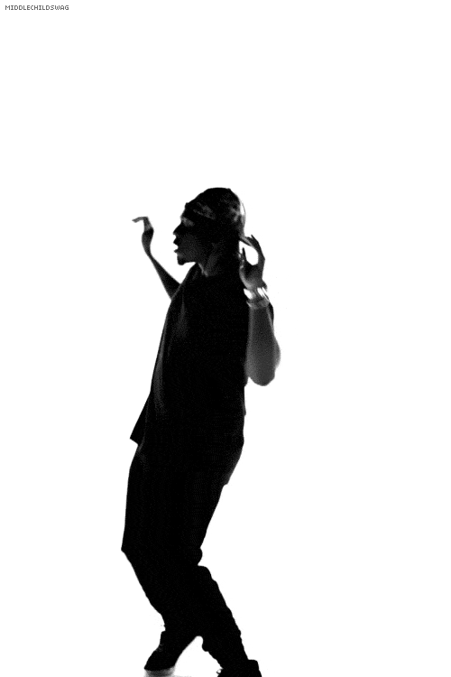

- Sobre
- Formación
- Skills
- Habilidades
- Hobbies
- Contacto
Sobre mí
Soy un tecnólogo en análisis y desarrollo de sistemas de información con una sólida formación académica de el SENA. He complementado mi educación con cursos especializados en programación a través del prestigioso programa Mision Tic 2022 en la Universidad Nacional de Colombia y el programa ONE de Oracle y Alura Latam. Como desarrollador front-end, poseo una gran pasión por la creación de experiencias de usuario atractivas y funcionales. Mi habilidad para traducir diseños visuales en sitios web interactivos y receptivos, utilizando tecnologías como HTML, CSS y JavaScript, me permite construir interfaces intuitivas y de alto rendimiento. Además, cuento con una mentalidad analítica que me permite comprender las necesidades del usuario y optimizar la usabilidad de las aplicaciones web. Soy un colaborador proactivo y creativo, capaz de trabajar en equipo y comunicarme de manera efectiva. Mi enfoque centrado en el cliente y mi capacidad para adaptarme rápidamente a los cambios me permiten abordar desafíos complejos de manera eficiente y cumplir con los plazos establecidos.
Formación académica
Tengo formación como Tecnólogo en Análisis y Desarrollo de Sistemas de Información por parte
del SENA. También he desarrollado cursos a través de programas como MisionTic 2022 y Oracle
ONE.
A continuación los cursos certificados que he desarrollado:
- Tecnología en análisis y desarrollo de sistemas de información - SENA - 2023
- Diplomado Fundamentos de programación - Universidad Nacional de Colombia - 2022
- Diplomado Programación Básica - Universidad Nacional de Colombia - 2022
- Diplomado Desarrollo de software - Universidad Nacional de Colombia - 2022
- Diplomado Profundización en desarrollo de aplicaciones móviles - Universidad Nacional de Colombia - 2022
- Diplomado habilidades en programación con énfasis en apliaciones móviles
- Curso Desarrollo de aplicaciones para dispositivos móviles con plataforma Android
- Fundamentos profesionales del desarrollo de software - Microsoft y LinkedIn - 2023
- Metodología de la programación de sistemas de información - SENA - 2021
- Desarrollo personal - Alura - 2023
- Principiante en programación - Alura - 2023
- Bussiness Agility - Alura - 2023
Habilidades técnicas
En el proceso formativo e investigativo como desarrollador, he adquirido habilidades en estas tecnologías:

- HTML 5

- Javascript
-

- PHP

- Node JS
-

- React
-

- CSS 3
Además, cuento con certificación de inglés nivel B2.
Habilidades blandas
Mi habilidad para comunicarme de manera clara y concisa me ayuda a transmitir ideas de manera
efectiva, ya sea de forma verbal o escrita. Además, mi empatía y capacidad de escucha activa
me permiten comprender las necesidades y perspectivas de los demás, fomentando así un
ambiente de trabajo colaborativo y respetuoso.
Soy un líder natural, capaz de motivar y
guiar a los miembros del equipo hacia el logro de metas comunes, fomentando un ambiente de
trabajo positivo y productivo. Mi flexibilidad y adaptabilidad me permiten enfrentar
desafíos con facilidad, encontrar soluciones creativas y ajustarme rápidamente a los
cambios.
Estas habilidades blandas, combinadas con mi dedicación y ética laboral, me
convierten en un profesional versátil y valioso en cualquier entorno.
Mis hobbies
En mis momentos de ocio, o cuando necesito relajarme y despejar la mente para ser más productivo, principalmente dedico tiempo a estas actividades:
- Bailar
- 
- Videojuegos

- Ver series

Formulario de contacto
Aquí puedes agregar un formulario de contacto para que los visitantes puedan comunicarse contigo. Puedes incluir campos como nombre, correo electrónico y un área de mensaje.